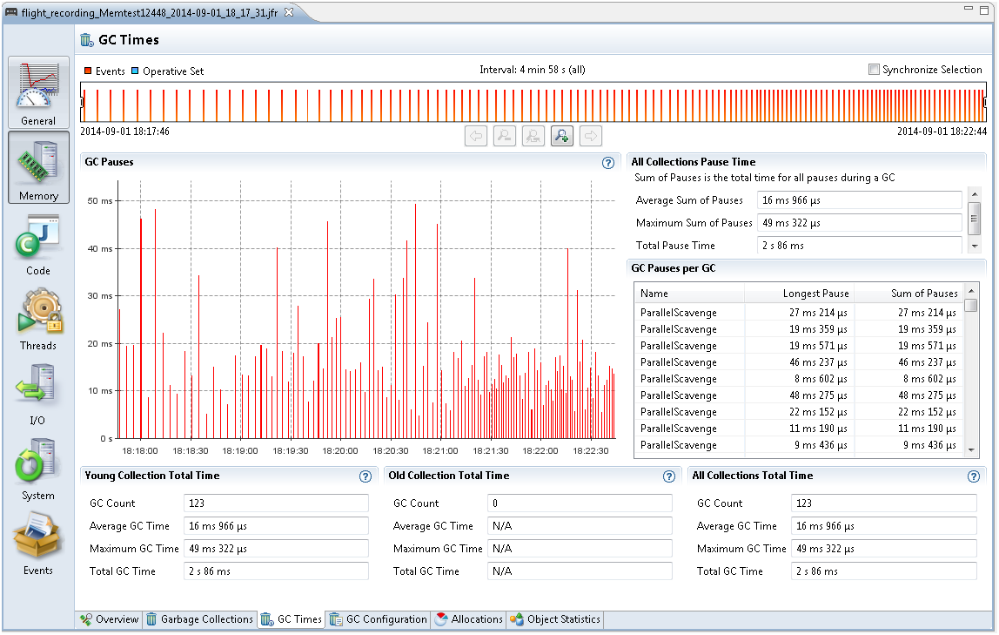

Tuning the HotSpot Garbage Collector can have a big impact on performance. See Garbage Collection Tuning Guide for general information.
Java application issues with garbage collections can be diagnosed using JFR. First, take a profiling flight recording of your application when it is up and running. Do not include Heap Statistics, because that will trigger extra old collections. To get a good sample, take a longer recording, for example one hour.
Select the Memory tab and then select GC Times subtab. GC Times is a good tab to investigate the overall performance impact of the GC. From the top right corner, see All Collections Pause Time section and take a look at the Average Sum of Pauses, Maximum Sum of Pauses, and Total Pause Time from the recording. The Sum of Pauses is the total amount of time that the application was paused during a GC. Many GCs do most of its work in the background. In those cases, the length of the GC does not matter and what matters is how long the application actually had to stop. Therefore, the Sum of Pauses is a good measure for GC impact.
Figure 4-3 shows a Flight Recording for 5 minutes (as seen from the time select bar). During this time, the average sum of pauses was 16 ms, the maximum sum of pauses was 49 ms and the total pause time was 2s 86 ms.
Figure 4-3 Garbage Collection Performance - GC Pauses
The main performance problems with garbage collections are usually either that individual GCs take too long, or that too much time is spent in paused GCs (total GC pauses).
When an individual GC takes too long, you may need to change the GC strategy. Different GCs have different trade-offs when it comes to pause times verses throughput performance. For more information, see Behavior-Based Tuning.
For example, you may also need to fix your application so that it makes less use of finalizers and/or semi-references.
When the application spends too much time paused, there are different ways to work around.
One way is to increase the Java heap size. Look at the Garbage Collection subtab to estimate the heap size used by the application and change Xms and Xmx to a higher value. The bigger the Java heap, the longer time it is between GCs. Watch out for any memory leak in the Java application, because that may cause more and more frequent GCs until an OutOfMemoryError is thrown. For more information, see Debug a Memory Leak Using Java Flight Recorder.
Another way to reduce the number for GCs is to allocate fewer temporary objects. Under the Allocations tab, look at how much memory is allocated over the course of the recording. Small objects are allocated inside TLABs and large objects are allocated outside TLABs. Often, the majority of allocations happen inside TLABs.
Last, but not the least way to reduce the need of GCs is to decrease the allocation rate. Select the Allocation in new TLAB tab and then choose Allocations tab to look at the allocation sites and stack traces that have the most memory pressure. You can either view it per class, or you can choose Allocation by Thread to see which threads consume the most allocation.
For general details about JFR Allocation tab, see Inspect a Flight Recording.
Some other settings may also increase GC performance of the Java application. Except for a few, almost all the chapters in Garbage Collection Tuning Guide discuss GC performance.